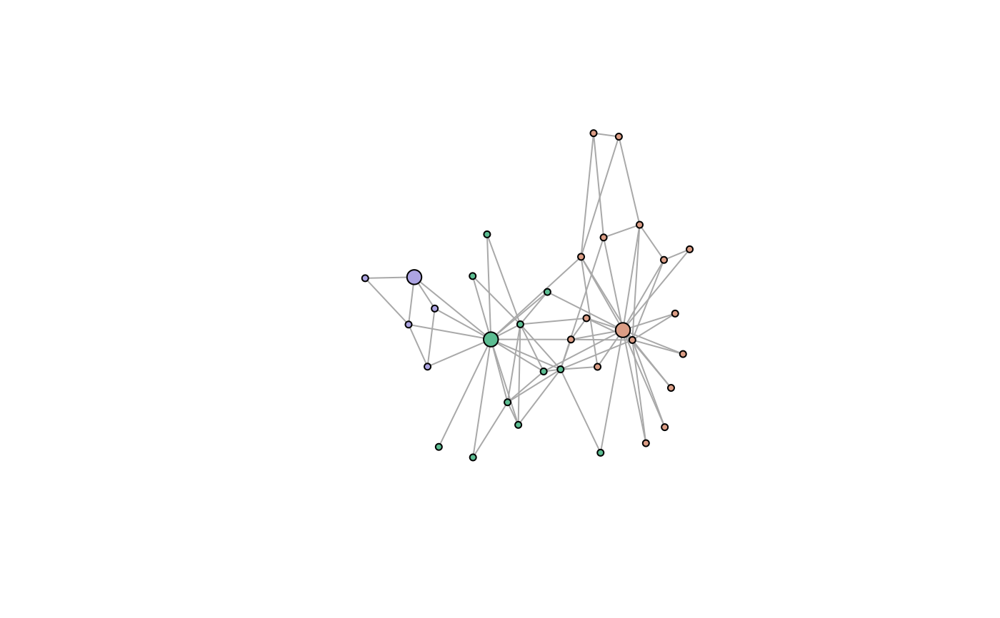

Draws the graph with vertices coloured by community and the leader of each community drawn larger, outlined, and labelled. Intra-community edges take the community colour and inter-community edges are greyed, so the block structure and the elected leaders are both readable at a glance. This is the figure style used for the community-and-leader maps in Ospina et al. (2026).
Usage
plot_partition(
g,
membership,
leaders,
layout = NULL,
leader_labels = TRUE,
legend = TRUE,
legend_max = 12L,
vertex_size = 4,
leader_size = 9,
palette = "Dynamic",
shade_edges = TRUE,
mark_communities = FALSE,
main = NULL,
...
)Arguments
- g
an [igraph::igraph] object (undirected, simple).
- membership
integer vector of 1-based community ids, one per vertex.
- leaders
integer vector of 1-based leader vertex indices.
- layout
optional layout: a two-column matrix with one row per vertex, or a layout function such as [igraph::layout_with_kk]. Defaults to Fruchterman-Reingold. Pass an explicit layout for a reproducible figure.
- leader_labels
logical; label the leader vertices (with the vertex `name` attribute when present, otherwise the vertex index).
- legend
logical; draw a community/leader legend. At most `legend_max` communities are listed, with a "+k more" entry.
- legend_max
maximum number of communities listed in the legend.
- vertex_size, leader_size
plotting sizes for ordinary vertices and for leaders.
- palette
an [grDevices::hcl.colors()] qualitative palette name.
- shade_edges
logical; colour intra-community edges by community and grey out the inter-community ones.
- mark_communities
logical; additionally draw shaded hulls around the communities (via `mark.groups`).
- main
plot title; `NULL` for a sensible default.
- ...
further arguments passed to [igraph::plot.igraph()].
Value
invisibly, a list with the `layout` used and the `colors` per community (so a caller can reuse them for a companion figure).
See also
[lcda_plot_communities()] for the end-to-end pipeline and [plot.lcda_grasp_result()] to plot a fitted result directly.
Examples
g <- igraph::make_graph("Zachary")
res <- lcda_grasp(g, B = 20, seed = 1)
set.seed(1)
plot_partition(g, res$best$membership, res$best$leaders)
